O que é estrutura de repetição?
Estruturas de repetição são laços que fazem uma ação repetidamente de forma rápida e fácil, por exemplo, ao invés de você ir colocando de 0 a 10 número por número, vai demorar muito, ai entra os laços de repetição, que fazem essa ação por você (é importante a lógica, pois precisa para fazer o laço).
Tipos de Estruturas
For
Essa declaração é um laço que é repetido até que uma condição seja falsa, e assim , parando quando não estiver mais correta. Ela cria um loop que tem três expressões opcionais, que são a inicialização, que é a declaração de váriaveis, geralmente usada para iniciar a contagem do loop, usando var (váriavel). Condição, que avalia se a expressão é verdade para executar o código e expressão final. Expressão final incrementa ou atualiza o contador. Tambem temos a declaração que é a instrução que será realizada no loop. Essa é a sintaxe explicada, abaixo veja a imagem:
1-Mostrar nomes de um vetor
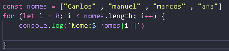2-Mostra as letras de uma string
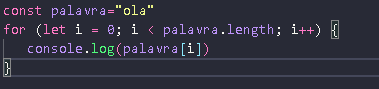3-Contar a quantidade de string
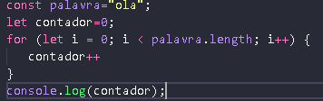4-Soma de um vetor
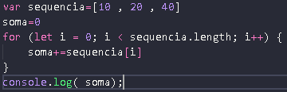5-Multiplicação de um vetor
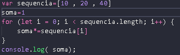While
A declaração while só executa suas instruções se a condição colocada for verdadeira, se for falso, passa para o próximo laço, ela é semelhante ao FOR, mas sua sintaxe não é igual. Esse loop funciona quando você declara uma variavel ou um valor(fora), depois coloca a condição e por fim a declaração que é a instrução que será realizada no loop. Essa é a sintaxe explicada, abaixo veja a imagem:
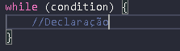1-Contagem decrescente
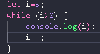2-Somando os números até 6
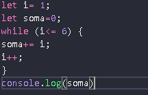3-Contar a quantidade de letras
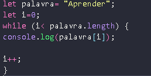4-Repetindo até virar falso
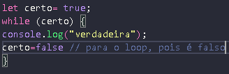5-Repetir palavra 3 vezes
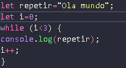Do While
Nessa estrutura, a instrução será realizada pelo menos 1 vez, mesmo que seja falsa. Sua sintaxe tem primeiro a declaração (foi explicado anteriormente), depois a condição. Também será realizada até que seja falsa a instrução, e se for falsa, próximo laço. sintaxe abaixo:
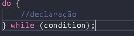1-Mostrar números pares
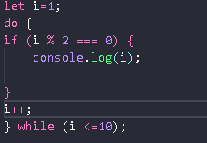2-multiplicando o número até chegar o mais próximo de outro número( na condição)
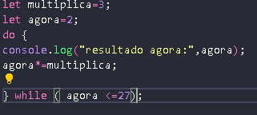3-Mostrar números impares
4- Exibindo de 15 a 1
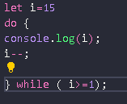5-Repetir palavra 5 vezes com Do While
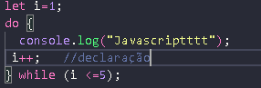